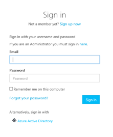
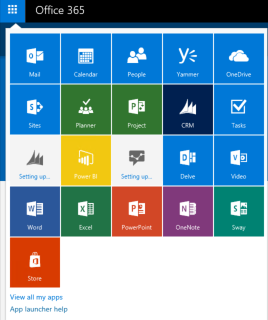
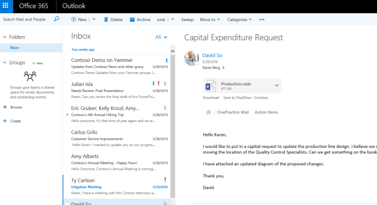
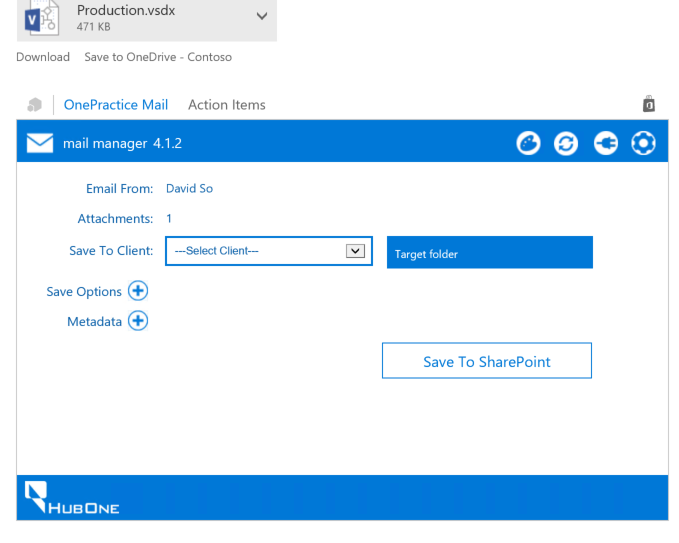
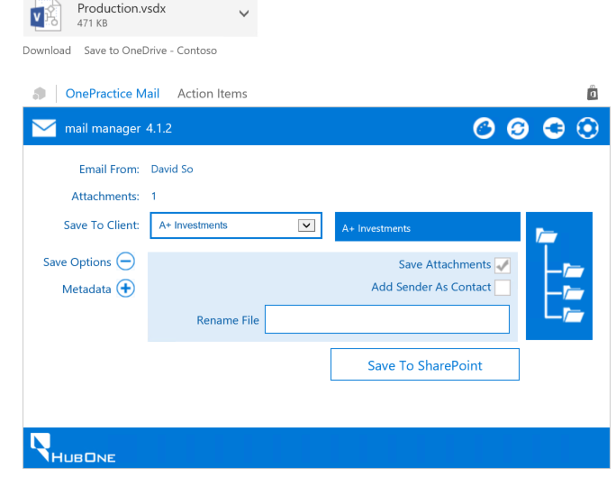
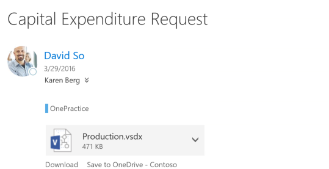
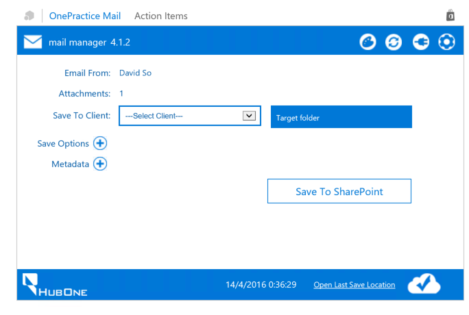
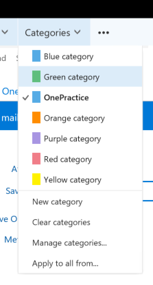

|
<< Click to Display Table of Contents >> Navigation: »No topics above this level« Managing Emails with Connected Practice |
Karen (who is an example CA we are using in this example) receives emails all day from clients, regulatory bodies, other team members and other systems. Many times these contain attachments and information that need to be stored under a client record, either to keep or to use in the future when preparing submissions or accounts.
Connected Practice Mail Manager is the tool used to quickly file and store, and even create these emails.
Karen wants to file emails she receieves from clients quickly and without fuss. She also wants to see at a glance which emails she's filed and which she hasn't.
Karen goes to the Kairos Portal (https://kairosportal.portal.azure-api.net)
She signs in with Azure Active Directory.

She clicks the App Launcher or Waffle and chooses Outlook

Alternatively she can use Outlook (Windows Key - Outloook)
She clicks an email with an attachment to preview it.

She clicks OnePractice Mail

She chooses the client and files the email and attachment. Finally she clicks Save to SharePoint.

Filed emails are stored in the OnePractice Category

Karen can Click Open Last Save Location to see where the email and attachments are saved

Use Manage Categories to assign a colour to OnePractice stored email.
